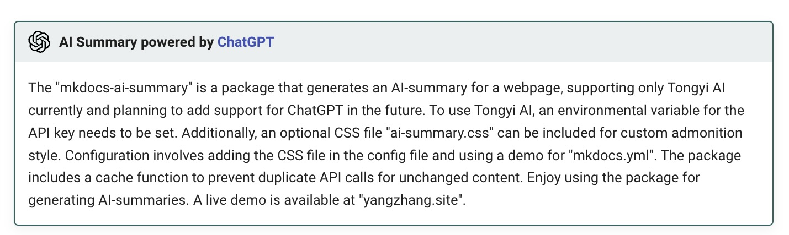

mkdocs-ai-summary
AI Summary powered by ChatGPT
mkdocs-ai-summary is a plugin that generates an AI summary for a webpage. The plugin can be installed via pip and supports the usage of ChatGPT and Tongyi AI. To utilize these, users are required to set an Environmental Variable for the api key. The plugin also includes optional support for the ai-summary.css for custom AI summary admonition style. Configuration parameters include api, model, ignore_code, cache, cache_dir, and prompt amongst others. The plugin also supports individual page configuration for the AI summary. The cache functionality ensures there are no unnecessary duplicate api calls. If the content hasn't changed since the last summary, the cache will be used. This software can be viewed with a demo on 'aiboy996.github.io/mkdocs-ai-summary' and 'yangzhang.site'.


Generage an ai-summary for the page: 
Minimal demo: aiboy996.github.io/mkdocs-ai-summary
Live demo(my homepage): yangzhang.site
Installation
You should install the package with pip:
pip install mkdocs-ai-summary[chatgpt]
# this will install `openai` additionally
pip install mkdocs-ai-summary[tongyi]
# this will install `dashscope` additionally
Warning
Only support ChatGPT and tongyi ai for now.
To use ChatGPT(default), you should set a Environmental Variable for api key:
export OPENAI_API_KEY='sk-xxxxxxx'
To use tongyi ai, you should set a Environmental Variable for api key:
export DASHSCOPE_API_KEY='sk-xxxxxxx'
Info
Then you can include the ai-summary.css(optional, this is for the custom ai summary admonition style) in the config file as below.
Configuration
Options can be set
| name | type | default value | note |
|---|---|---|---|
| api | str | chatgpt | only support chatgpt or tongyi |
| model | str | gpt-3.5-turbo | - |
| ignore_code | bool | true | ignore code block in markdown |
| cache | bool | true | - |
| cache_dir | str | "./" | - |
| prompt | str | "Please help me summarize the following content into an abstract within 200 words: " | - |
For ChatGPT Summary
Setup mkdocs.yml like this:
site_name: mkdocs-ai-summary
theme:
name: material
plugins:
- ai-summary:
api: "chatgpt"
model: "gpt-3.5-turbo"
ignore_code: true
cache: true
cache_dir: "./"
prompt: "Please help me summarize the following content into an abstract within 200 words: "
- tags
markdown_extensions:
- admonition
- pymdownx.details
- pymdownx.superfences
- pymdownx.tabbed:
alternate_style: true
extra_css:
- ai-summary.css
Then for the page you want an ai-summary, just add a meta tag:
---
include:
- ai-summary
---
# title
hello ai summary.
For tongyi ai Summary
or you can use tongyi ai by setting:
plugins:
- ai-summary:
api: "tongyi"
model: "qwen-turbo"
ignore_code: true
cache: true
cache_dir: "./"
prompt: "Please help me summarize the following content into an abstract within 200 words: "
Setup ai-summary for specific page
You can also setup ai summary for each page separately:
---
include:
- ai-summary
ai-summary-config:
api: "tongyi"
model: "qwen-turbo"
prompt: "帮我把下面的内容总结为200字以内的摘要："
---
# title
hello ai summary.
all config options are available. Page configuration will override unified configuration.
About Cache
Don't worry about duplicate api calls, we've made the cache function so that if you've done an ai-summary before and the content hasn't changed it will use the cache.
Enjoy it.